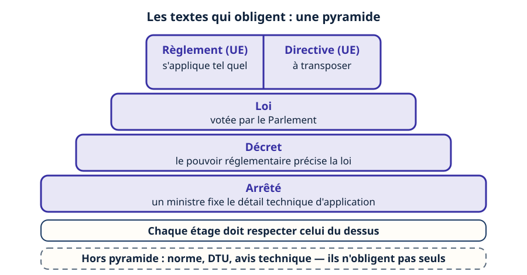
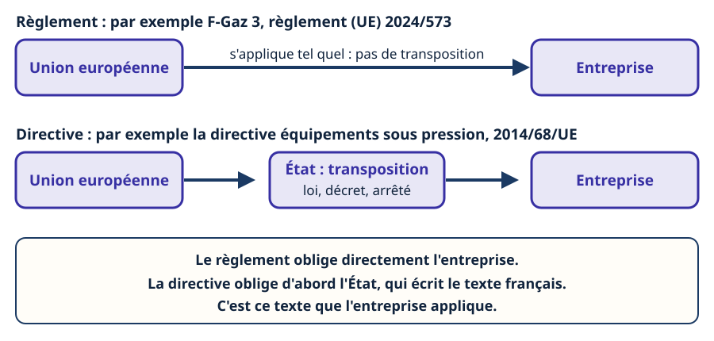
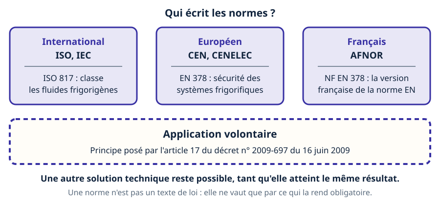
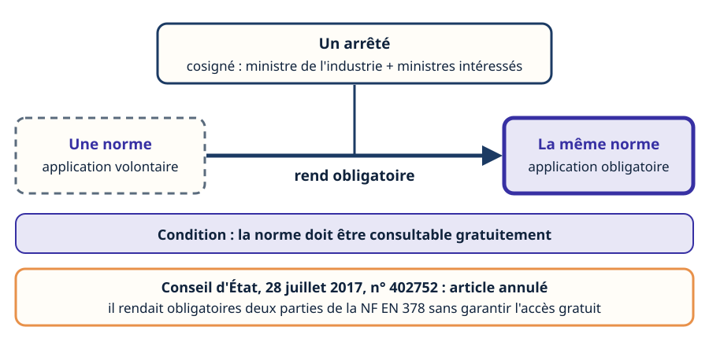
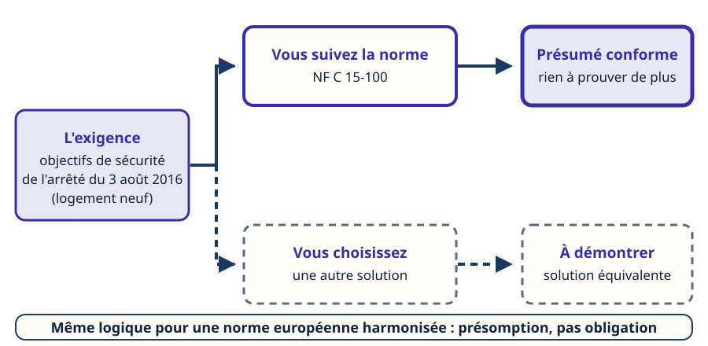
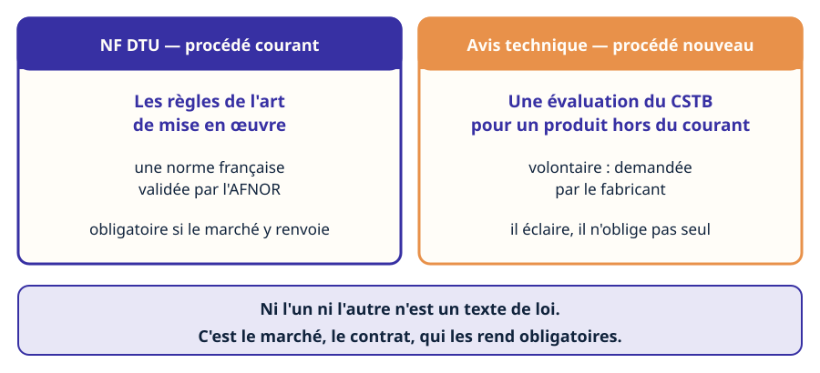
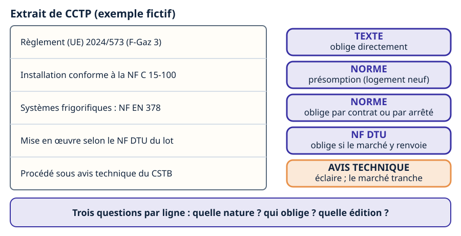
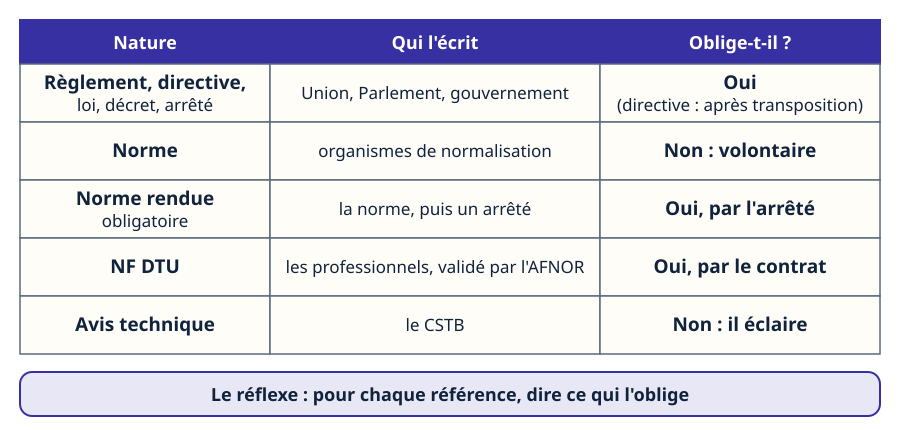

Mini-station commentée · 8 écrans et 4 questions · environ 10 minutes
Objectif
À la fin de la station, vous savez classer une référence citée dans un dossier : texte qui oblige (règlement, directive, loi, décret, arrêté), norme volontaire par principe, norme rendue obligatoire par un arrêté, DTU ou avis technique. Vous savez dire ce qu'est une présomption de conformité et lire un CCTP en posant, ligne par ligne, la même question : qu'est-ce qui oblige ?
Référentiel : hors REAC TP-00133 (TP TECVC) — culture professionnelle du technicien d'études et du chargé d'affaires : aucune des compétences CP1 à CP10 n'est évaluée ici. Attestation d'aptitude 2025 : 1.00 (connaissance élémentaire de la législation de l'Union européenne et nationale applicable) et 11.03 (réglementations et normes de sécurité applicables aux réfrigérants inflammables ou toxiques).
Chaque écran peut être expliqué à voix haute : le bouton « Écouter » commente ce que vous voyez. Rien n'est dit qui ne soit aussi écrit.
1 / 12
Écran 1 sur 8
Qui oblige : la pyramide des textes
Un texte oblige quand il appartient à la pyramide du droit. Du haut vers le bas : le droit de l'Union européenne (règlement, directive), la loi, le décret, l'arrêté. Chaque étage doit respecter celui du dessus. C'est la première chose qu'un technicien d'études cherche dans un dossier : quel étage cite-t-on ?
Trois références n'y figurent pas : la norme, le DTU (document technique unifié) et l'avis technique. Ce ne sont pas des textes de loi. Elles peuvent pourtant s'imposer — les écrans suivants disent comment.
Repères
La loi fixe les règles dans les matières que la Constitution lui réserve ; les autres matières sont réglementaires (art. 34 et 37). Les traités régulièrement ratifiés ont une autorité supérieure à celle des lois (art. 55).

La pyramide se pose du bas vers le haut. Le cadre tireté reste à l'extérieur.
Écran 2 sur 8
Règlement ou directive : ce qui s'applique tel quel
Le règlement européen est obligatoire dans tous ses éléments et directement applicable dans tout État membre. La directive lie l'État quant au résultat à atteindre, en lui laissant le choix de la forme et des moyens : il la transpose par un texte national (loi, décret, arrêté).
Deux exemples du réseau. F-Gaz 3 est un règlement, le règlement (UE) 2024/573 : il s'applique sans transposition, et l'arrêté du 21 novembre 2025 organise le terrain français (attestations, contrôles). La directive équipements sous pression (2014/68/UE) est une directive : l'entreprise applique le texte français qui la transpose.

Une flèche directe, ou un détour par l'État : c'est toute la différence.
Écran 3 sur 8
La norme : volontaire par principe
L'article 17 du décret n° 2009-697 du 16 juin 2009 relatif à la normalisation pose le principe : les normes sont d'application volontaire. Elles sont écrites par des organismes de normalisation : l'AFNOR (Association française de normalisation) en France, le CEN et le CENELEC en Europe, l'ISO et l'IEC dans le monde.
« NF EN 378 » se lit ainsi : une norme d'origine européenne (EN), diffusée en version française (NF). Aucune norme ne vous oblige parce qu'elle existe : elle vous oblige parce qu'un texte ou un contrat s'y réfère. Les deux écrans suivants montrent les deux portes.

Trois niveaux d'écriture, un seul principe : l'application volontaire.
Écran 4 sur 8
La flèche « rend obligatoire »
Une norme peut être rendue d'application obligatoire par un arrêté signé du ministre chargé de l'industrie et du ou des ministres intéressés (art. 17 du décret de 2009). Les normes ainsi rendues obligatoires sont consultables gratuitement sur le site de l'AFNOR.
Un cas réel, au cœur du métier. Un arrêté relatif aux fluides frigorigènes exigeait, pour les contrôles d'étanchéité, la conformité aux normes NF EN 378-2:2012 et NF EN 378-3:2012. Le Conseil d'État (28 juillet 2017, n° 402752) a jugé que le ministre de l'environnement pouvait renvoyer à des normes techniques, mais il a annulé l'article : l'accès libre et gratuit à ces normes n'était pas garanti.

Trait tireté, puis trait plein : c'est l'arrêté qui fait la différence.
Écran 5 sur 8
La présomption de conformité : la voie sûre
Depuis l'arrêté du 3 août 2016 (installations électriques des bâtiments d'habitation), la NF C 15-100 n'est plus rendue obligatoire « dans son intégralité », comme l'avait fait l'arrêté du 22 octobre 1969. Le texte fixe des objectifs de sécurité, et présume conforme l'installation qui suit la norme, tout en laissant place à une solution équivalente.
Même mécanisme pour une norme harmonisée européenne : son usage reste volontaire, et l'opérateur est libre de choisir une autre solution technique pour démontrer la conformité. Mais la publication de sa référence au Journal officiel de l'Union européenne est la condition de la présomption de conformité prévue par les textes concernés. La NF EN 378 est de cette famille : sa partie 2 est rattachée aux directives équipements sous pression et machines.

Trait plein : la voie sûre. Trait tireté : la voie à démontrer.
Écran 6 sur 8
Le DTU et l'avis technique : le marché, pas la loi
Les NF DTU (documents techniques unifiés) décrivent les règles de l'art et les prescriptions de mise en œuvre d'un domaine technique. Élaborés par les professionnels du bâtiment, ils sont validés par l'AFNOR. Ils s'imposent quand le marché y renvoie.
L'avis technique est une évaluation demandée volontairement par le fabricant au CSTB (Centre scientifique et technique du bâtiment), pour un produit ou un procédé dont la constitution ou l'emploi ne relèvent pas des pratiques courantes. Il éclaire les acteurs de la construction ; il ne change pas la répartition de leurs responsabilités.

Procédé courant : le DTU. Procédé nouveau : l'avis technique.
Écran 7 sur 8
Lire un CCTP : trois questions par ligne
Un CCTP (cahier des clauses techniques particulières) cite tout cela d'un seul tenant. Pour chaque référence, posez trois questions :
Quelle nature ? Texte (règlement, directive, loi, décret, arrêté), norme, DTU ou avis technique ?
Qui oblige ? Un texte de la pyramide, un arrêté qui rend la norme obligatoire, ou le contrat : les contrats légalement formés tiennent lieu de loi à ceux qui les ont faits (Code civil, art. 1103), donc ce que le marché cite s'impose à l'entreprise.
Quelle édition ? Une norme évolue. L'arrêté du 3 août 2016 date lui-même sa référence : NF C 15-100 de 2002, mise à jour 2005, amendements A1 à A5.

Les étiquettes se posent une à une : c'est la méthode, ligne par ligne.
Norme : volontaire par principe (art. 17 du décret n° 2009-697). Elle oblige si un arrêté la rend obligatoire — et elle doit alors être consultable gratuitement.
Présomption de conformité : suivre la norme est la voie la plus sûre, pas la seule.
DTU : oblige par le contrat, quand le marché y renvoie. Avis technique : éclaire, n'oblige pas seul.
Le réflexe : pour chaque référence d'un dossier, dire ce qui l'oblige.

Cinq lignes, une question : qu'est-ce qui oblige ?
Question 1 sur 4
Règlement ou directive : quelle différence pour l'entreprise ?
Rappel de l'écran 2 — une flèche directe, ou un détour par l'État.
Question 2 sur 4
Qu'est-ce qui rend une norme d'application obligatoire ?
Rappel de l'écran 4 — c'est l'arrêté qui change le statut.
Question 3 sur 4
Un logement neuf, une installation conçue selon la NF C 15-100 : que déduire ?
Rappel de l'écran 5 — la voie sûre, pas la seule.
Question 4 sur 4
Le CCTP renvoie au NF DTU du lot, sans arrêté : s'impose-t-il ?
Rappel de l'écran 7 — trois questions par ligne.
Les correspondances de la station
Marquage CE (même sous-ligne)
— la norme harmonisée et la présomption de conformité, côté produit.
Garanties et assurances (même sous-ligne)
— ce qui se passe quand la règle de l'art n'a pas été suivie.
NF C 15-100 (sous-ligne Électrique)
— l'exemple de la présomption : de l'obligation de 1969 aux objectifs de 2016.
NF EN 378 (sous-ligne Fluidique & thermique)
— une norme de sécurité qui s'impose par un texte ou par un contrat.